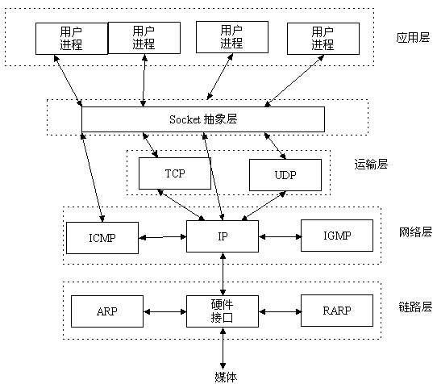
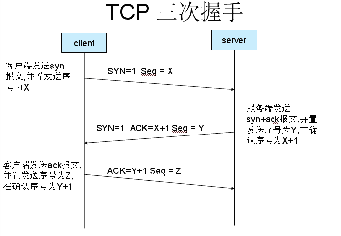
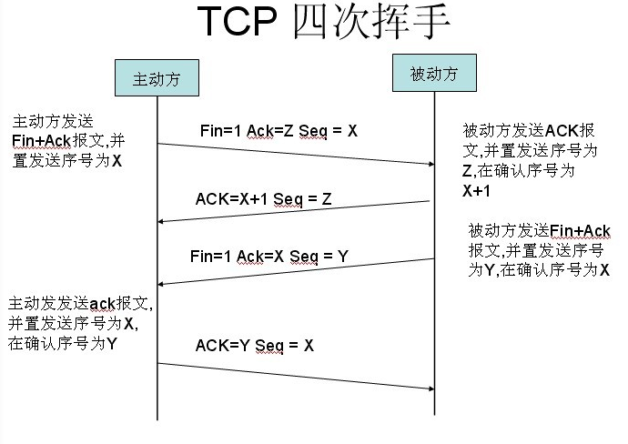
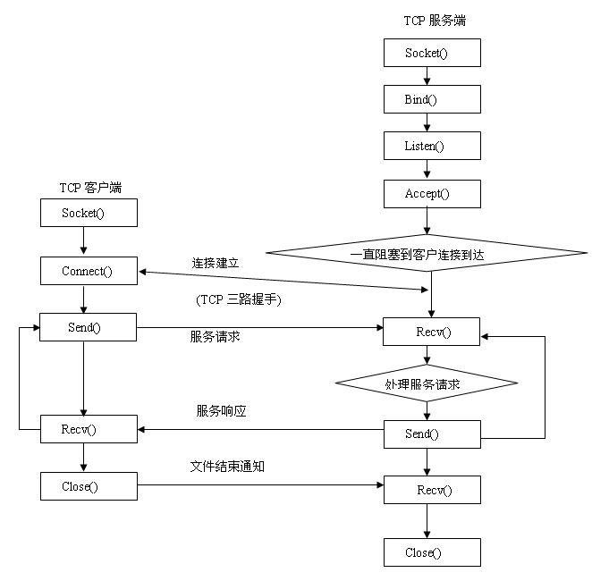
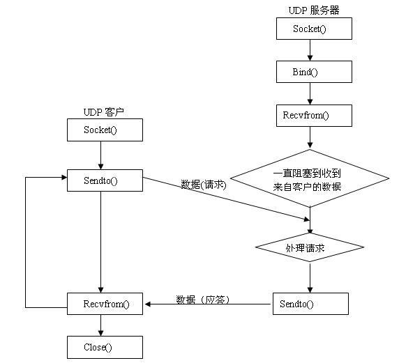

转: about socket
在了解socket网络编程之前，我们需要先知道以下几个问题：
网络中进程之间如何通信？
Socket是什么？
TCP和UDP的区别？
socket中TCP的三次握手和四次握手建立连接详解
iOS socket的基本操作
一、网络中进程之间如何通信？
我们知道两个进程如果需要进行通讯最基本的一个前提能够唯一的标识一个进程，在本地进程通讯中我们可以使用PID来唯一标示一个进程，但PID只在本地唯一，网络中的两个进程PID冲突几率很大，这时候我们需要另辟它径了，我们知道网络层的ip地址可以唯一标示主机，而传输层协议和端口号可以唯一标示主机的一个进程，这样我们可以利用三元组（ip地址＋协议＋端口号）唯一标示网络中的一个进程。能够唯一标示网络中的进程后，它们就可以利用Socket进行通信了。
二、Socket 是什么？
上面我们已经知道网络中的进程是通过socket来通信的，那什么是socket呢？socket起源于Unix，而Unix/Linux基本哲学之一就是“一切皆文件”，都可以用“打开open –> 读写write/read –> 关闭close”模式来操作。

从这张图片中，我们可以很直观的看到Socket的位置。我们经常把socket翻译为套接字，socket是在应用层和传输层之间的一个抽象层，它把TCP/IP层复杂的操作抽象为几个简单的接口供应用层调用已实现进程在网络中通信。
三、TCP和UDP的区别？
TCP：面向连接、传输可靠(保证数据正确性,保证数据顺序)、用于传输大量数据(流模式)、速度慢，建立连接需要开销较多(时间，系统资源)。
UDP：面向非连接、传输不可靠、用于传输少量数据(数据包模式)、速度快。
关于TCP是一种流模式的协议，UDP是一种数据报模式的协议，这里要说明一下，TCP是面向连接的，也就是说，在连接持续的过程中，socket中收到的数据都是由同一台主机发出的（劫持什么的不考虑），因此，知道保证数据是有序的到达就行了，至于每次读取多少数据自己看着办。
而UDP是无连接的协议，也就是说，只要知道接收端的IP和端口，且网络是可达的，任何主机都可以向接收端发送数据。这时候，如果一次能读取超过一个报文的数据，则会乱套。比如，主机A向发送了报文P1，主机B发送了报文P2，如果能够读取超过一个报文的数据，那么就会将P1和P2的数据合并在了一起，这样的数据是没有意义的。
TCP三次握手和四次挥手
相对于SOCKET开发者，TCP创建过程和连接拆除过程是由TCP/IP协议栈自动创建的。因此开发者并不需要控制这个过程。但是对于理解TCP底层运作机制，相当有帮助。
因此在这里详细解释一下这两个过程。
TCP三次握手
所谓三次握手(Three-way Handshake)，是指建立一个TCP连接时，需要客户端和服务器总共发送3个包。
三次握手的目的是连接服务器指定端口，建立TCP连接,并同步连接双方的序列号和确认号并交换 TCP 窗口大小信息.在socket编程中，客户端执行connect()时。将触发三次握手。

三次握手
首先了解一下几个标志，SYN（synchronous），同步标志，ACK (Acknowledgement），即确认标志，seq应该是Sequence Number，序列号的意思，另外还有四次握手的fin，应该是final，表示结束标志。
第一次握手：客户端发送一个TCP的SYN标志位置1的包指明客户打算连接的服务器的端口，以及初始序号X,保存在包头的序列号(Sequence Number)字段里。
第二次握手：服务器发回确认包(ACK)应答。即SYN标志位和ACK标志位均为1同时，将确认序号(Acknowledgement Number)设置为客户的序列号加1以，即X+1。
第三次握手：客户端再次发送确认包(ACK) SYN标志位为0，ACK标志位为1。并且把服务器发来ACK的序号字段+1，放在确定字段中发送给对方.并且在数据段放写序列号的+1。
TCP四次挥手
TCP的连接的拆除需要发送四个包，因此称为四次挥手(four-way handshake)。客户端或服务器均可主动发起挥手动作，在socket
编程中，任何一方执行close()操作即可产生挥手操作。

其实有个问题，为什么连接的时候是三次握手，关闭的时候却是四次挥手？
因为当Server端收到Client端的SYN连接请求报文后，可以直接发送SYN+ACK报文。其中ACK报文是用来应答的，SYN报文是用来同步的。但是关闭连接时，当Server端收到FIN报文时，很可能并不会立即关闭SOCKET，所以只能先回复一个ACK报文，告诉Client端，”你发的FIN报文我收到了”。只有等到我Server端所有的报文都发送完了，我才能发送FIN报文，因此不能一起发送。故需要四步握手。
tcpsocket和udpsocket的具体实现
tcp和udp的socket是有区别的，这里给出这两种的设计框架。
基本TCP客户—服务器程序设计基本框架：

基本UDP客户—服务器程序设计基本框架流程图：

常用的Socket类型有两种：流式Socket（SOCK_STREAM）和数据报式Socket（SOCK_DGRAM）。流式是一种面向连接的Socket，针对于面向连接的TCP服务应用；数据报式Socket是一种无连接的Socket，对应于无连接的UDP服务应用。
四、 iOS socket的基本操作
讲了这么久，终于要开始讲socket的具体实现了，iOS提供了Socket网络编程的接口CFSocket，不过这里使用BSD Socket。iOS网络编程层次结构也分为三层：
Cocoa层：NSURL，Bonjour，Game Kit，WebKit
Core Foundation层：基于 C 的 CFNetwork 和 CFNetServices
OS层:基于 C 的 BSD socket
Cocoa层：是最上层的基于 Objective-C 的 API，比如 URL访问，NSStream，Bonjour，GameKit等，这是大多数情况下我们常用的 API。Cocoa 层是基于 Core Foundation 实现的。
Core Foundation层：因为直接使用 socket 需要更多的编程工作，所以苹果对 OS 层的 socket 进行简单的封装以简化编程任务。该层提供了 CFNetwork 和 CFNetServices，其中 CFNetwork 又是基于 CFStream 和 CFSocket。
OS层：最底层的 BSD socket 提供了对网络编程最大程度的控制，但是编程工作也是最多的。因此，苹果建议我们使用 Core Foundation 及以上层的 API 进行编程。
socket调用库函数主要有：
1 | Socket(af,type,protocol) |
socket（套接字）是通信的基石，是支持TCP/IP协议的网络通信的基本操作单元，包含进行网络通信必须的五种信息：连接使用的协议，本地主机的IP地址，本地进程的协议端口，远地主机的IP地址，远地进程的协议端口。
多个TCP连接或多个应用程序进程可能需要通过同一个TCP协议端口传输数据。为了区别不同的应用程序进程和连接，计算机操作系统为应用程序与TCP/IP协议交互提供了套接字(Socket)接口。应用层可以和传输层通过Socket接口，区分来自不同应用程序进程或网络连接的通信，实现数据传输的并发服务。
建立Socket连接至少需要一对套接字，其中一个运行于客户端，称为ClientSocket，另一个运行于服务器端，称为ServerSocket。套接字之间的连接过程分为三个步骤：服务器监听，客户端请求，连接确认。
作者：心至靜行至遠
链接：https://www.jianshu.com/p/0a050f098a1e
来源：简书